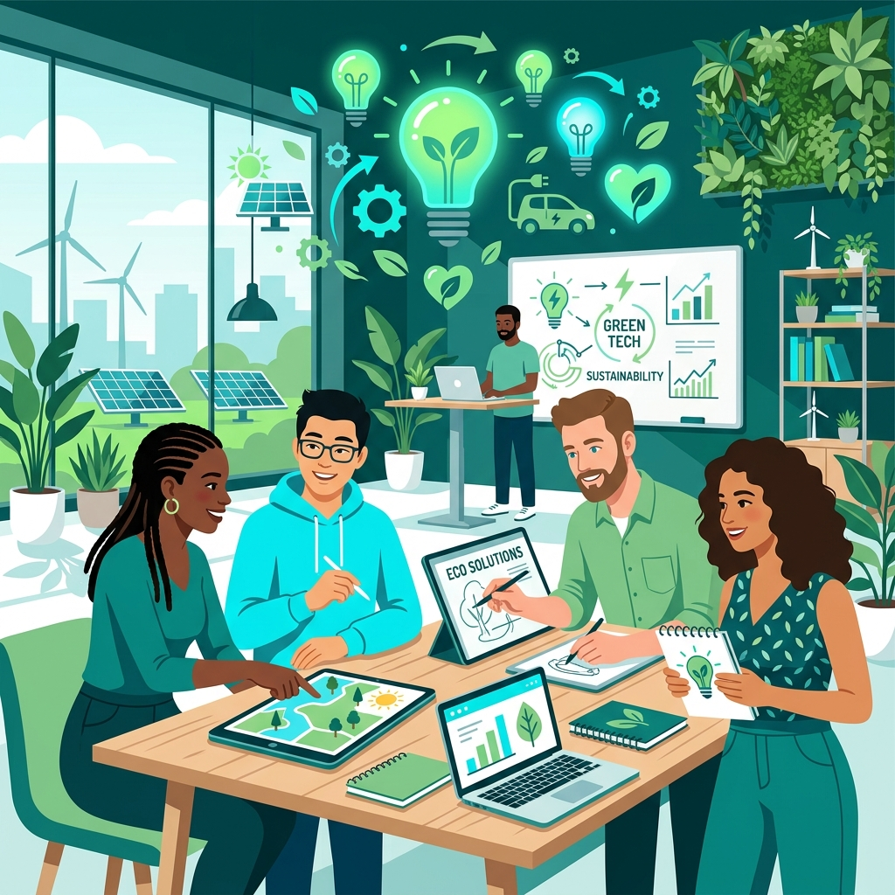

Jövőbeli Projektek

Erasmus+ Ifjúsági csere
Future Eco-friendly Entrepreneurs
2026. július 19–26. Budapest, Magyarország
Tervezd meg a fenntartható jövőt! Csatlakozz az Erasmus+ ifjúsági cserénkhez Budapesten, ahol nemzetközi csapatban fejlesztheted zöld vállalkozói készségeidet. A tájékoztatóban (Infopack) szereplő 18 éves korhatár ellenére fiatalabbak is bátran jelentkezhetnek!